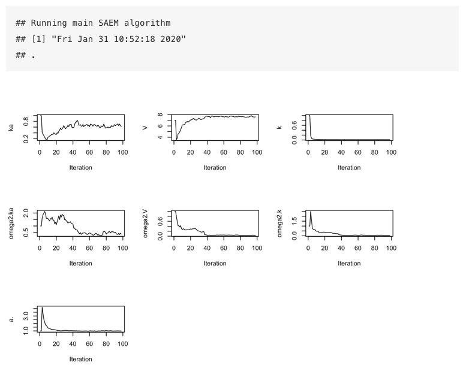
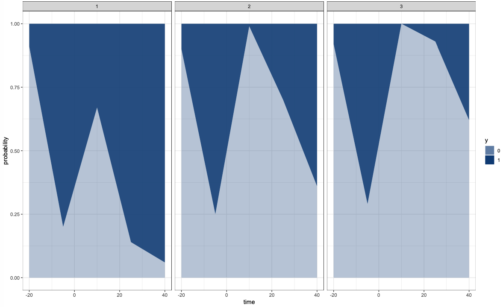
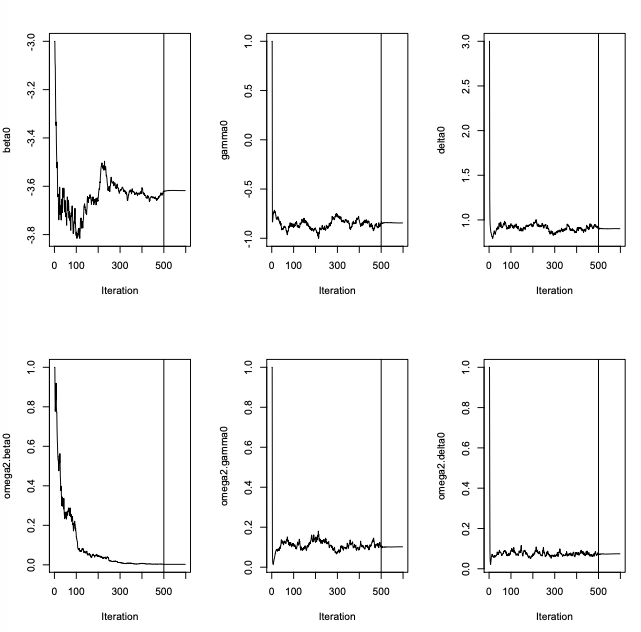
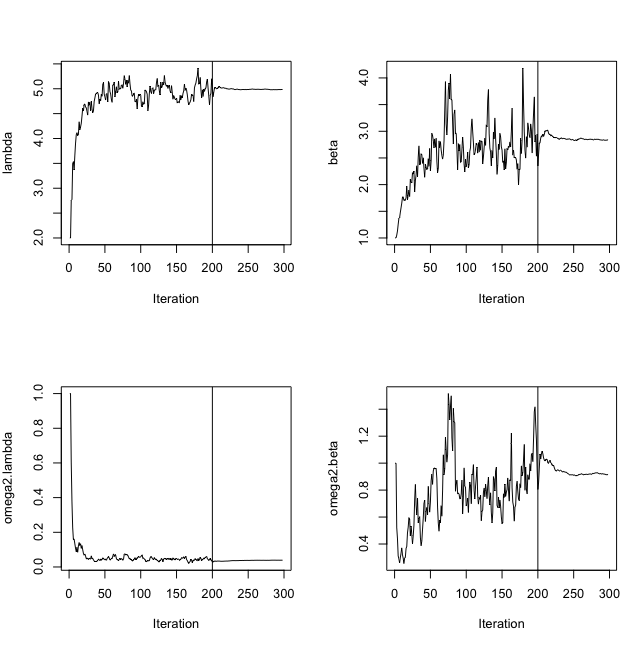

Chapter 4 Case Studies
Some basic Case Studies are demonstrated in this chapter; the vignettes will be discussing the application in more depth.
4.1 A two-compartment PK model
library(saemix)
?saemixRead the Data
warfa_data <- read.table("data/warfarin_data.txt", header=T)
saemix.data<-saemixData(name.data=warfa_data,header=TRUE,sep=" ",
na=NA, name.group=c("id"),name.predictors=c("amount","time"),
name.response=c("y1"), name.X="time")Create the Model
saemix models are contained in a R function with one blocks:
model1cpt<-function(psi,id,xidep) {
dose<-xidep[,1]
tim<-xidep[,2]
ka<-psi[id,1]
V<-psi[id,2]
k<-psi[id,3]
CL<-k*V
ypred<-dose*ka/(V*(ka-k))*(exp(-k*tim)-exp(-ka*tim))
return(ypred)
}
saemix.model<-saemixModel(model=model1cpt,description="warfarin",
type="structural",psi0=matrix(c(1,7,1,0,0,0),ncol=3,byrow=TRUE,
dimnames=list(NULL, c("ka","V","k"))),transform.par=c(1,1,1),
omega.init=matrix(c(1,0,0,0,1,0,0,0,1),ncol=3,byrow=TRUE),
covariance.model=matrix(c(1,0,0,0,1,0,0,0,1),ncol=3,
byrow=TRUE))Run the SAEM algorithm
K1 = 200
K2 = 100
#Run SAEM
options<-list(seed=39546,map=F,fim=F,ll.is=F,
nbiter.mcmc = c(2,2,2), nbiter.saemix = c(K1,K2),nbiter.sa=0,
displayProgress=TRUE,save.graphs=FALSE,nbiter.burn =0)
fit<-saemix(saemix.model,saemix.data,options)
4.2 A categorical data model with regression variables
4.2.1 mlxR: simulate synthetic data
library("mlxR")
catModel <- inlineModel(
"[LONGITUDINAL]
input = {beta0,gamma0,delta0, dose}
dose = {use=regressor}
EQUATION:
lm0 = beta0+gamma0*t + delta0*dose
D = exp(lm0)+1
p0 = exp(lm0)/D
p1 = 1/D
DEFINITION:
y = {type=categorical, categories={0, 1},
P(y=0)=p0,
P(y=1)=p1}
[INDIVIDUAL]
input={beta0_pop, o_beta0,
gamma0_pop, o_gamma0,
delta0_pop, o_delta0}
DEFINITION:
beta0 ={distribution=normal, prediction=beta0_pop, sd=o_beta0}
gamma0 ={distribution=normal, prediction=gamma0_pop, sd=o_gamma0}
delta0 ={distribution=normal, prediction=delta0_pop, sd=o_delta0} ")
nobs = 15
tobs<- seq(-20, 50, by=nobs)
reg1 <- list(name='dose',
time=tobs,
value=10*(tobs>0))
reg2 <- list(name='dose',
time=tobs,
value=20*(tobs>0))
reg3 <- list(name='dose',
time=tobs,
value=30*(tobs>0))
out <- list(name='y', time=tobs)
N <- 100
p <- c(beta0_pop=-4, o_beta0=0.3,
gamma0_pop= -0.5, o_gamma0=0.2,
delta0_pop=1, o_delta0=0.2)
g1 <- list(size=N,regressor = reg1)
g2 <- list(size=N,regressor = reg2)
g3 <- list(size=N,regressor = reg3)
g <- list(g1,g2,g3)
res <- simulx(model=catModel,output=out, group=g,parameter=p)
plot1 <- catplotmlx(res$y)
4.2.2 saemix: fit the noncontinuous data model
Create the saemix.data object
saemix.data<-saemixData(name.data=res,header=TRUE,sep=" ",
na=NA, name.group=c("id"),name.predictors=c("amount","time"),
name.response=c("y1"), name.X="time")Create the model
saemix models are contained in a R function with one blocks:
cat.model<-function(psi,id,xidep) {
level<-xidep[,1]
dose<-xidep[,2]
time<-xidep[,3]
th1 <- psi[id,1]
th2 <- psi[id,2]
delta0 <- psi[id,3]
lm0 <- th1+th2*time + delta0*dose
D <- exp(lm0)+1
P0 <- exp(lm0)/D
P1 <- 1/D
P.obs = (level==0)*P0+(level==1)*P1
return(P.obs) }
saemix.model<-saemixModel(model=cat.model,description="cat model",
type="likelihood", psi0=matrix(c(2,1,2),ncol=3,byrow=TRUE,
dimnames=list(NULL,c("th1","th2","th3"))),transform.par=c(0,0,0),
covariance.model=matrix(c(1,0,0,0,1,0,0,0,1),ncol=3,byrow=TRUE),
omega.init=matrix(c(2,0,0,0,1,0,0,0,1),ncol=3,byrow=TRUE),
error.model="constant")Run the SAEM algorithm
K1 = 500
K2 = 100
options<-list(seed=39546,map=F,fim=F,ll.is=F,
nbiter.mcmc = c(2,2,2), nbiter.saemix = c(K1,K2),nbiter.sa=0,
displayProgress=TRUE,save.graphs=FALSE,nbiter.burn =0)
saemix.fit<-saemix(saemix.model,saemix.data,options)
4.3 A repeated time-to-event data model
Read the Data
data(tte.saemix)
saemix.data<-saemixData(name.data=tte.saemix,header=TRUE,
sep=" ",na=NA, name.group=c("id"),
name.response=c("y"),name.predictors=c("time","y"),
name.X=c("time"))Create the Model
saemix models are contained in a R function with one blocks:
timetoevent.model<-function(psi,id,xidep) {
T<-xidep[,1]
N <- nrow(psi)
Nj <- length(T)
censoringtime = 20
lambda <- psi[id,1]
beta <- psi[id,2]
init <- which(T== 0)
cens <- which(T== censoringtime)
ind <- setdiff(1:Nj, append(init,cens))
hazard <- (beta/lambda)*(T/lambda)^(beta-1)
H <- (T/lambda)^beta
logpdf <- rep(0,Nj)
logpdf[cens] <- -H[cens] + H[cens-1]
logpdf[ind] <- -H[ind] + H[ind-1] + log(hazard[ind])
return(logpdf) }
saemix.model<-saemixModel(model=timetoevent.model,description="time model",
type="likelihood", psi0=matrix(c(2,1),ncol=2,byrow=TRUE,
dimnames=list(NULL, c("lambda","beta"))), transform.par=c(1,1),
covariance.model=matrix(c(1,0,0,1),ncol=2, byrow=TRUE))Run the SAEM algorithm
K1 = 200
K2 = 100
saemix.options<-list(map=F,fim=F,ll.is=F, nb.chains = 1,
nbiter.saemix = c(K1,K2),displayProgress=TRUE,save.graphs=FALSE)
saemix.fit<-saemix(model,saemix.data,saemix.options)